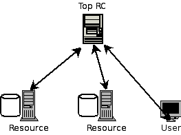
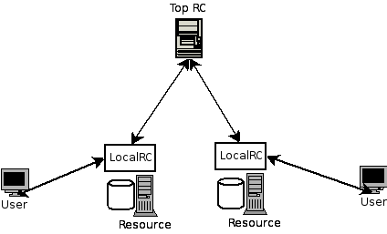

CREATING THE TOP REPLICA CATALOGUE
There should be one TopRegionalRC in every simulation. All the local replica catalogues query this entity about the information on files.
double baud_rate = 100000000; // 100 MB/s
double propDelay = 10; // propagation delay in millisecond
int mtu = 1500; // max. transmission unit in byte
try {
SimpleLink l = new SimpleLink("rc_link", baud_rate, propDelay, mtu);
rc = new TopRegionalRC(l);
} catch (Exception e1) {
e1.printStackTrace();
}
Why do we need a TopRegionalRC?
The TopRegionalRC acts either as a central replica catalogue or (as the name implies) the top replica catalogue in a tree of replica catalogues.Centralized RC
Hierarchical RC
Example 1:Example 2: